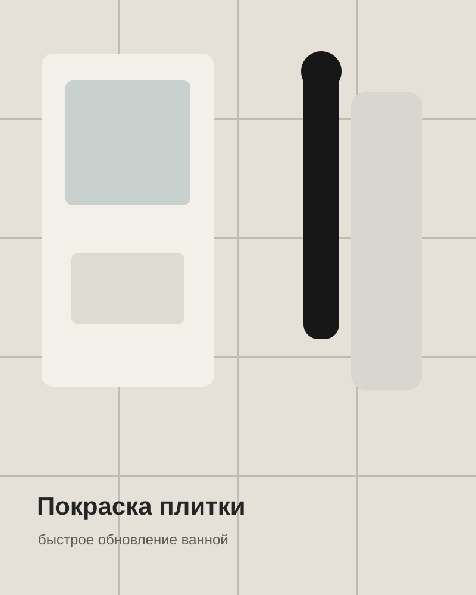
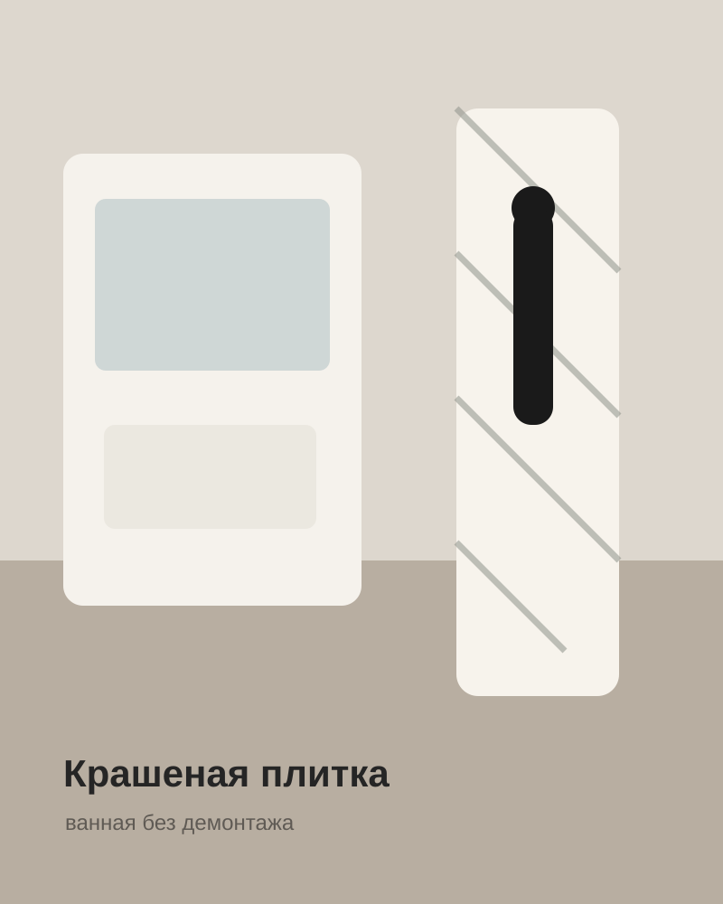
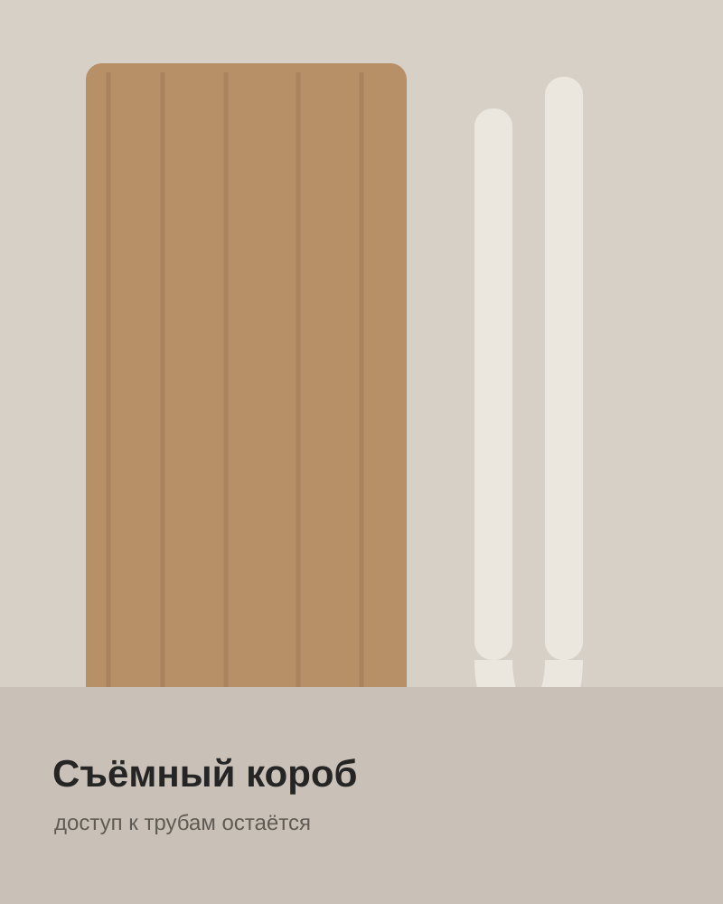
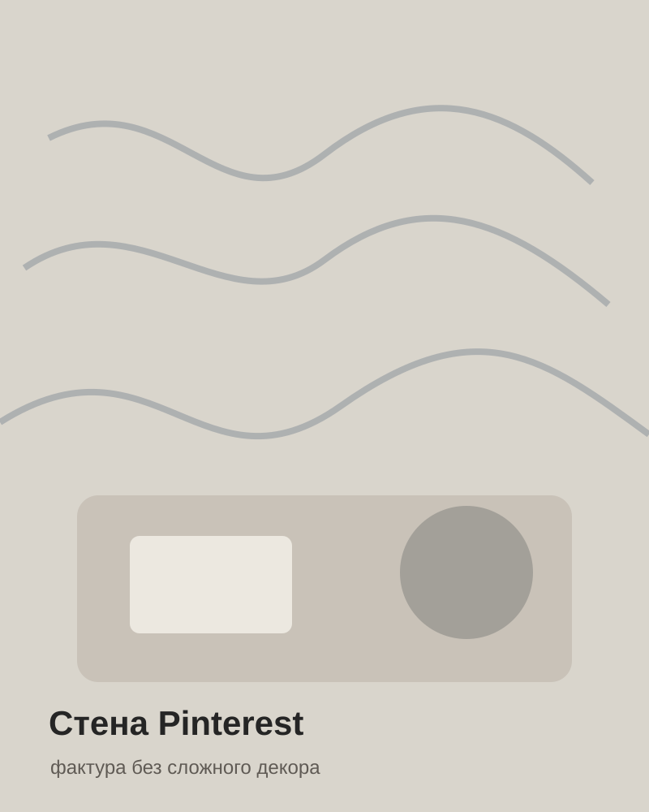
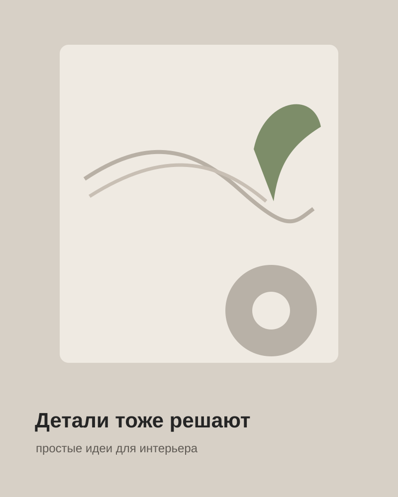

Ремонт / перекраски / своими руками
Ремонт без магии.
Просто показываю, как.
Покраска плитки, съёмные короба, стены, плинтусы и маленькие переделки, которые реально повторить дома.

Покраска плитки
Съёмный короб40+ тыс.
в Instagram
в Instagram
ПОКРАСКА ПЛИТКИ✦СЪЁМНЫЕ КОРОБА✦СТЕНЫ✦ПЛИНТУСЫ✦ВАННАЯ✦DIY✦
Популярные переделки
Не «идеальный ремонт».
А решения, которые работают.

Шпаргалки
Сразу к делу.
Коротко: что купить, чем подготовить поверхность и в каком порядке делать.
Все инструкции в Instagram →
О блоге
Показываю ремонт так, чтобы хотелось попробовать самому.
Без сложных терминов и бесконечной теории. Здесь — реальные переделки, материалы, ошибки и способы сделать аккуратно своими руками.
62+публикации
40 тыс.подписчиков
DIYбез лишней сложности
Есть вопрос по ремонту?